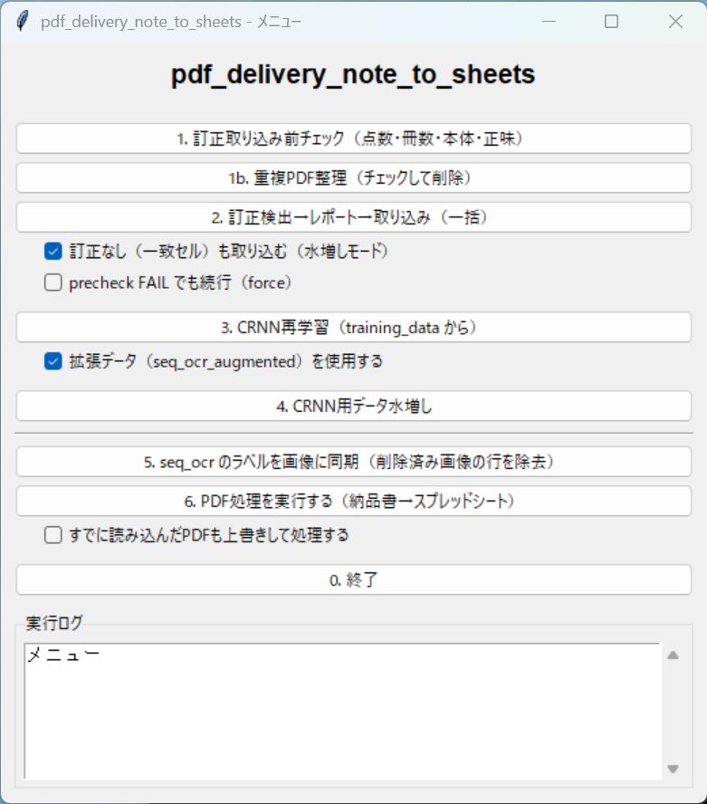
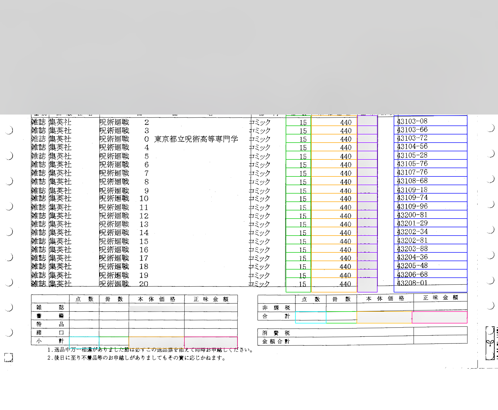
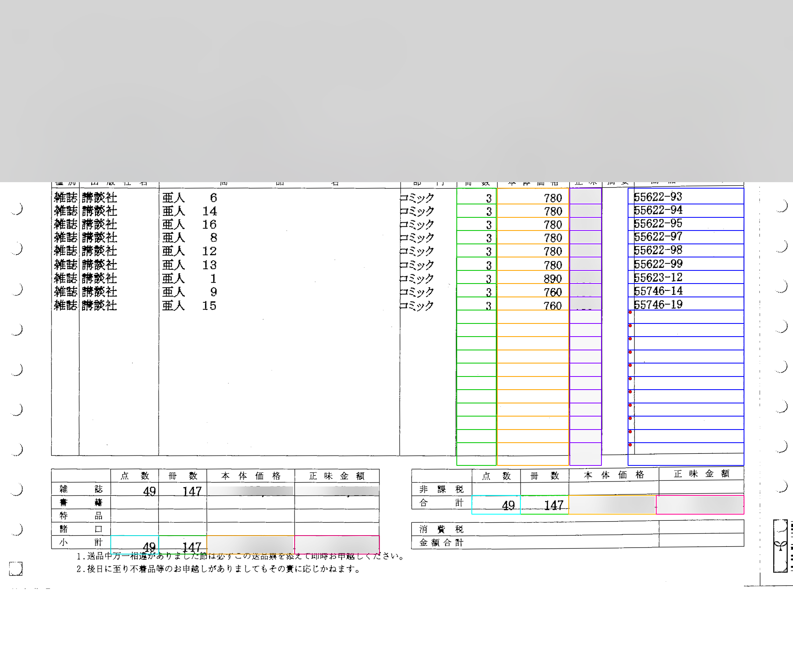

送品票 OCR → Google Sheets
スキャンした送品票（納品書）PDF から表構造を読み取り、Google スプレッドシートへ載せる処理を半自動化する Windows 向けツールです。業務時間外の完全個人開発による業務改善プロトタイプで、会社からの依頼や業務時間内の開発ではありません。
全項目の手入力よりは楽になりますが、読み取り結果を帳票と見比べて手動訂正する前提です。無料寄りの OCR では精度に限界があり、一人開発のため退職までに実用と呼べる状態には間に合いませんでした。公開の目的は完成製品の宣伝ではなく、課題分解・パイプライン設計・デバッグの進め方を示すことです。
制作経緯
コミックは点数・品目が多く、毎日の入荷を正確に把握するのは大変です。現場では入荷箱を開けたら、とにかく片っ端から出荷できるよう全巻セットにしていく運用でした。そのなかで、入荷数を正確に把握し、在庫数を正確に追跡できるようにしたいというのが動機です。
発注したつもりが取り消されていた、届かない、といったことはままありますが、それだけが動機ではありません。なによりまず、送品票から「どの商品がどれだけ届いたか」をデータ化し、集計できるようにしたかった、という位置づけです。出版社へ直接注文したものも取次を経て届くため、対象帳票はおおむね取次の送品票に集約されます。
結局、私一人の手では時間が足りず追いつきませんでした。実用化には至っていません。
技術上の難しさ
紙スキャンの送品票を扱ううえでは、次が難しいです。
- 歪み・傾き・薄い罫線
- 明細の列境界ズレ（冊数／本体／正味）
- ページ抜け・行抜けの見逃し
- OCR 誤読とヘッダ集計の不一致
方針は、先に幾何（読み取り枠＝ROI）を正し、そのうえで OCR・検証・人手訂正（HITL）に回すことでした。
できたこと / できなかったこと
| できた | 前処理・罫線・ROI デバッグ、ハイブリッド OCR、Sheets 書込経路、検証、HITL（見比べ訂正）メニュー、exe 配布 |
|---|---|
| できた（部分） | 列ずれの治癒、明細開始位置の安全弁、ページ生存のログ監視。手入力より負担は減る一方、帳票照合の手動訂正は残る |
| できなかった | 手動訂正なしで回せる精度、学習による大幅な精度向上、認証など運用の詰め、一人体制での実用化（時間切れ） |
処理の流れ
- PDF / 画像
- 前処理・罫線検出
- ROI（列・行の読み取り枠）
- ハイブリッド OCR
- 検証 → Sheets / Drive、必要に応じて HITL 訂正
画面
帳票ヘッダー（店名・取次・各種コードなど）はぼかし済みです。明細・フッターでは正味／掛率が分かる数値のみぼかし、コミック名・冊数・本体単価・商品コードの ROI 例は技術説明のため残しています。



工夫した点
- デバッグ画像と抽出座標を同じ基準にし、「見た枠」と「読んだ枠」の食い違いを減らす
- 偽の縦罫による列ずれを、検出線から選び直して直す試み
- 明細開始位置が見出し帯へ食い込まないよう下限を設ける
- ヘッダ集計と明細合計の不一致を検知し、精度不足を可視化する
- 書き込みなしの試行（dry_run）、HITL、exe 配布まで一通り用意
検証で見えたこと
開発末期のランでは、処理は最後まで完走し、ページ抜けも見えない例がありました。列ずれが改善した頁もあります。一方で OCR の残り誤差や検証不一致は残り、帳票との見比べ訂正が必要でした。学習による効果も限定的です。
技術
- Python · OpenCV · PyMuPDF
- Tesseract / EasyOCR · PyTorch（CUDA）
- Google Sheets API · Drive API
- PyInstaller · pytest
動く一式の配布はしていません（紹介と画面のみ）。実運用の認証情報や未マスクの帳票は公開しません。